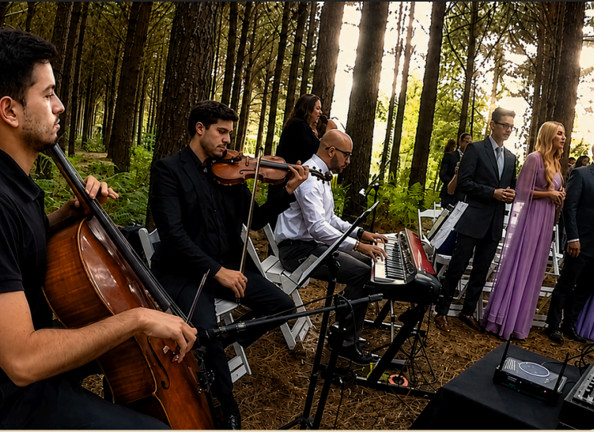
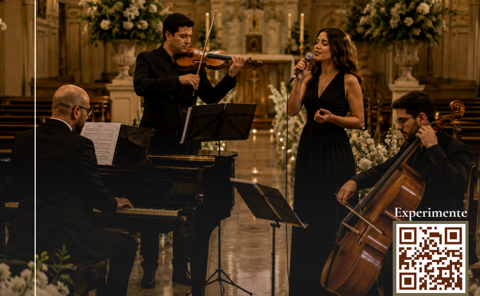

Guima Guimarães iniciou seus estudos ao piano aos 11 anos e construiu, ao longo de sua trajetória, uma carreira marcada pela elegância, versatilidade e maturidade musical. Pianista, arranjador e intérprete, Guima transita com naturalidade entre o jazz, o blues e a bossa nova — estilos que moldam sua identidade artística e definem o clima sofisticado de suas apresentações.
Solicitar PropostaLocal, buffet, convidados, cerimonial. E ainda precisa decidir qual música contratar.
Seleção e orientação do repertório para cada momento da cerimônia, respeitando o estilo e a história do casal.
Organização musical das entradas e momentos especiais em sintonia com a dinâmica da celebração.
Preparação individual dos músicos e ensaios da formação escolhida para garantir unidade e qualidade na execução.

Alinhamento com cerimonialistas e demais profissionais envolvidos para que tudo aconteça no momento certo.
Execução profissional da trilha sonora da cerimônia, acompanhando cada momento com sensibilidade e precisão